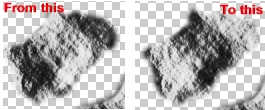
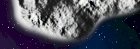
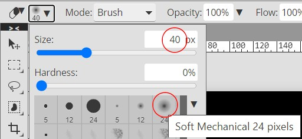

|
PART II:
The Space Scene |
| Step 16: Asteroids |
|
Asteroids are rocks floating through space. We will use a few filters and
some new tools as we insert (at least) 3 asteroids into our space scene.
- Open your Space15
file in Photopea
- Turn off the visibility of all of your layer folders -
note that you can quickly and easily turn off the visibility of everything
in your Layers panel by clicking on the top visibility icon (the eye) and
dragging down to the bottom visibility icon...
You should be left with the checkerboard
- Insert a new layer at the top of your layer
stack and name it Asteroid1
- Click the Lasso Tool and set Feather on the Lasso Tool's
option bar to
5px...
- Press Ctrl+R on the keyboard to turn on
Photopea's Rulers
Pressing Ctrl+R should only cause your rulers to appear, so if your browser
gives you a pop-up window, simply dismiss the window and use the menu (click
View and then click Rulers) to turn on the rulers instead.
- Zoom in (press the Alt key and roll the mouse wheel up) until you can see an area of your image that is about 300x300
pixels in size - use the ruler you just turned on to determine when you have
zoomed in enough...
The ruler above is displaying approximately 335 pixels
Since many of us are using different screen resolutions, it is not possible
for me to give you an exact Zoom amount. You want to zoom in to a point where
you can create a nicely shaped asteroid and ensure that it is not too big, as
having an overly large asteroid will cause problems later on.
- Draw an ovoid shape...
Don't draw it too close to the edge of your image - keep in mind that you
will move it later
An important thing to keep in mind here is that you want to create an
asteroid shape that is oval. In other words, make sure it is roundish, kinda
like a fat potato or a dented egg. Avoid creating an asteroid that is oddly shaped or has strange things sticking
off of it such as this...
While asteroids like this are physically possible and in fact do exist, they
are very rare. Rounded asteroids are far more common (asteroids tend to get rounded
by colliding with other asteroids which, over time, breaks off protruding pieces of
rock) and will look much better in our
space scene because they will be easily recognizable as an asteroid where the
shape above will cause many viewers of our image to say "huh?"
- Press D on the keyboard (remember what this does?)
- Press Alt+Backspace on the keyboard (remember what this does?)
- Press X on the keyboard (this is the keyboard
shortcut to swap the Foreground and Background colors) - you should now
have white as your Foreground color and black as your Background color
- Click Filter then point at Render and click Clouds - your shape should
look something like this...
Keep in mind that you will have a different shape than mine and it will be
filled with a different pattern than mine
- Click Filter then point at Render and click Difference
Clouds - your shape should look something like this...
- Click Filter and then click Filter Gallery...
This opens the Filter Gallery window
- Click the drop-down arrow and choose Bas Relief...
- Make Detail and Smoothness match the image below...
For the Light option, you can choose either Left or Right, so click on each
one and see which one gives you the best looking asteroid
- Click OK to exit the Filter Gallery - your asteroid should look
something like this...
- Press Ctrl+D to deselect your asteroid
So far our first asteroid looks pretty good. We are not done with it, but
let's take a moment right now to quickly create another asteroid and then we
will do some additional editing on both of them to make sure that they do not
look exactly alike. We are going to create the second asteroid by cheating a
little and duplicating pieces of the first one.
- Press Ctrl+R to turn off the Rulers
- Insert a new layer at the top of the layer stack and name it Asteroid2
- Click the Clone Tool...
The Clone Tool allows you to
copy one area of your image onto another area. In
other words, you can create an exact 'clone' of one part of your image and place
it in another part of your image. For us, we will be using the Clone Tool
to use pieces of our first asteroid to build our second asteroid. Follow the
directions below, and exactly how the Clone Tool works will become obvious.
- Press Ctrl+0 on the keyboard - this will set your zoom level so that you can see your entire space
scene at once (at this point your space scene should contain only your first asteroid and the transparent
checkerboard pattern because you should still have the visibility of all of
the layer folders turned off)
- On the Clone Tool options bar, select the Soft Mechanical 24 pixels
brush and set the size to 30 px...
To use the Clone Tool,
we first need to
determine the area of the image we wish to copy - which for us is parts of
our first asteroid - and then we need to determine where we want to copy the
parts of the image to - which for us will be in a blank area beside our first
asteroid. Let's try this and see how it works.
-
Press and hold the Alt key -
notice that as you hold the Alt key down that the cursor changes to a plus
sign...

this is how Photopea tells you that you are about to define an area to
clone from - click in the center of asteroid 1 and
release the Alt key
It may look like nothing is happening, but Photopea remembers
where you clicked and will begin copying what is at that spot to the new area when
you begin to draw.
-
Move the cursor to the empty area beside asteroid 1
-
Click and drag the mouse around - notice as you do this that
Photopea places a tiny + sign over the spot where you originally
clicked in direction 23 and that as you drag the tiny plus sign is following
the motion of your mouse
Most of you will notice a slight problem at this point - nothing is actually being
drawn. So what's going on? It turns out that by default Photopea is set up to
clone regions only on one layer, and since the layer we are currently drawing on
(which should be Asteroid2) is blank, we are not actually drawing anything right
now. To fix this problem, we need to make a quick adjustment to our Clone
Tool's options bar.
-
On the Clone Tool options bar, set Source: to Current & Below....
This will allow us to pull from not only our current layer but also from the
layer directly below it
-
Alt+click once more on the center of asteroid 1
-
Move the cursor to the empty area beside asteroid 1 and
click and drag the mouse around - you should now be cloning
asteroid 1 in the new location...
Draw until you have created a new asteroid approximately half the size of
asteroid 1...
Try not to make the overall shape of your second asteroid the same shape as
the first one, and avoid the edge of asteroid 1 (it has a less than perfect
edge that we will need to deal with later)
Remember that since Photopea is copying whatever is in the original area
that if you go off your asteroid that nothing will be copied.
Looking at asteroid 2 at this point you may notice that it looks like a
miniature version of asteroid 1 (because it is). Let's do some quick adjusting to make
asteroid 2 look a little more unique.
- Make sure the Asteroid2 layer is the active layer
- Click Image on the menu bar and point at Adjustments and
click Invert...
This turns the dark parts of our asteroid light and the light parts dark...

- Click Edit and then click Free Transform
- Change the size of the asteroid in some way - you can drag any
resize handle to make the rock wider, thinner, taller, shorter, or use a
corner to adjust both height and width at the same time - then rotate
it so that it sits at a different angle from asteroid 1...
- Press Enter to apply the transform
You should now have two asteroids that hopefully do not look like exact copies
of each other. If you are happy with your two asteroids then skip the following
direction, but if your asteroids still look too much alike, do this:
- If your asteroids still look alike, click the Eraser tool and use a
Soft Mechanical brush with size set to 50 px to remove parts of asteroid 2's edge until
it appears unique - remember to keep it roundish
Now let's make a quick adjustment that will give our space rocks some extra
dimension and help to keep the surface looking nice when we shrink them down in
the coming directions.
- Click the Sharpen Tool...
You may have to right-click the Blur Tool and then select the Sharpen
Tool...
- On the Sharpen Tool options bar, set Strength to
50%...
The Sharpen Tool increases the detail of our selection, which
will help to make our asteroids look like they are actually made out of rock.
- Make Asteroid1 the active layer
- On the Sharpen Tool options bar set the brush to Soft Mechanical and
the Size to 30 px
- Click and drag an area of the asteroid you want to sharpen -
notice this process does not
result in a huge change...
Do not sharpen the entire asteroid or your rock will look unnatural - we just want some additional detail so our rocks look like they actually
have peaks and valleys and will maintain a sharp, crisp appearance when we
make them smaller
- Repeat the above three directions on asteroid 2
Two asteroids down, so we just need to create one more. Keep in mind that you
can create more asteroids if you wish to make your scene unique (3 is the
minimum), but don't go crazy and add in tons of asteroids or your planets will
become fiery-asteroid-crashing-death-traps.
- Create an additional asteroid (name it Asteroid3) by going back to
direction 3 and following directions 3-17 and directions 35-39
Creating asteroid 3 from scratch ensures that our third asteroid is
completely unique and different from the other two. DO
NOT simply create your third (or any
other) asteroid by duplicating asteroids 1 or 2. If you do this you will get
NO credit for having
created your final asteroid. Also, your space scene will look stupid. Think about
it: there are not two identical asteroids floating around the universe. Take some
pride in your work.
At this point, if we turn on our other layers we will see that our asteroids
are actually pretty bright when compared to the rest of the stuff in our
image...
We need to make a quick change to each asteroid so that it looks
more like it is actually a rock flying through the blackness of outer space.
- Make Asteroid1 the active layer
- Click Image and point at Adjustments and click Levels
- Click on the Levels window's title bar and drag it to a spot where you can
see both the Levels window and your asteroid 1
- Drag the black Input Levels arrow...
to the right until your
asteroid has a nice combination of light and dark areas - what amount you
use
is up to you, but a value between 70 and 120 will work best (note that it is
ok if your histogram looks different than mine)
- Click OK
- Repeat the above 5 directions for asteroids 2 and
3 (it is ok to set different level amounts for each of your asteroids
- the amount of light and shadow on each rock depends on where they are in
your space scene and thus will not be the same for each one when you move
them around a few directions from now)
Things are looking pretty good at this point, but if you zoom in on asteroid
1 you will most likely see a potential problem (you may need to turn on your
star field to see it)...

Notice the strange white glow around the edge of the asteroid? This is left
over from when we applied the filters at the start of this step and can end up being
a real issue when we resize our asteroids or when we move them around and place
them over other elements in our image and the white edge becomes noticeable.
Let's take a quick second to remove this edge.
- Make Asteroid1 the active layer
- Click the Eraser tool
- On the Eraser tool options bar, ser the brush to Soft Mechanical
and the size to 40 px...

Note that a size of 40 works for my asteroid, but if your asteroid is
considerably larger (or smaller) than mine, you may need to use a different
size
- Click and drag around the outside of your asteroid until you have erased
the white border...
Zoom out and take a look at your asteroid - it should have a nice, not white
edge to it...

Note that when you resize your asteroid and make it smaller that it will lose
some of the detail and imperfections around the edges. This is supposed to
happen, so don't worry too much about it.
- Repeat the above 4 directions to correct the edges of both
Asteroid2 and Asteroid3
- Zoom out and make sure that the edges of all three of your asteroids
look good
Now that our asteroids are ready to go, let's get them in a more believable
size.
- Resize all your asteroids so they are in scale with the other objects
in your scene - you can make them different sizes so that they appear to be
different distances away (your asteroids should not be as large as your
planets, but instead should be awesome little [but not too little] additions
to your solar system)
- Resizing your asteroids may make them brighter than what we want, so
take a second now and have a look at your asteroids and see if they are too
bright - if they are so bright that they stand out in your scene (they
should appear to blend in and be an extra element in the background and not
the focal point of the scene), simply repeat directions 42-47 to make
them darker
- Scatter the asteroids throughout your image
- Select all of the asteroid layers...
- Click the New Folder icon
- Rename the new Folder group to Asteroids...
- Lock the Asteroids group
With all of your layer groups and layers turned on you should now have a space
scene similar to the one below...
We have all of the pieces of our space scene in place, so all that is left is
one final finishing touch.
- Click File and then click Save as PSD
- Name the file Space16
01 |
02 |
03 |
04 |
05 |
06 |
07 |
08 |
09 |
10 |
11 |
12 |
13 |
14 |
15 | 16 |
17 |
18 |
19 |
20